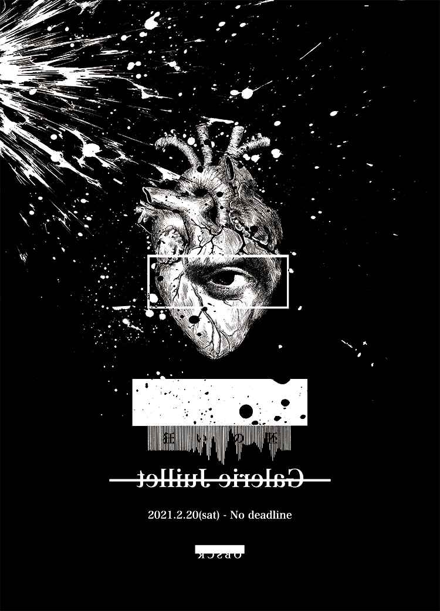

御礼
OBSCR個展「狂い」へご来場いただきまして
誠にありがとう御座いました。
心より御礼申し上げます。
絵画解剖
{kind=link}
{kind=link}
{kind=link}
{kind=link}
{kind=link}
{kind=link}
{kind=link}
{kind=link}
{kind=link}
{kind=link}
{kind=link}
{kind=link}
{kind=link}
{kind=link}
{kind=link}
{kind=link}
{kind=link}
{kind=link}
{kind=link}
{kind=link}
原画注文
限定グッズ注文
会場BGM（再生順）
- The Prayer of the Moon / Redi Hasa
- 影の無いヒト / ASA-CHANG & 巡礼
- 暗い日曜日 / ダミア
- 幻想的小品集 作品3の2/前奏曲 嬰ハ短調 / Sergei Rachmaninoff
- Abe Sada / Les Elles
- Forty Six & 2 / TOOL
- 死霊のアリアナ / sukekiyo
- 無題 / Eknoh
- 花 / ASA-CHANG&巡礼
- Sketch Artist / Kim Gordon
- Cookie Butter / Kim Gordon
- The Grudge / TOOL
- Neun Arme / Einsturzende Neubauten
- Closer / Nine Inch Nails
- Ruiner / Nine Inch Nails
- 偶像モラトリアム / sukekiyo
- 幻想的小品集 作品3の1/悲歌 変ホ短調 / Sergei Rachmaninoff
- Sheela-Na-Gig / Nurse With Wound
- Stinkfist / TOOL
- Meltdown / Atrium Carceri
- 尽きる / 佐野信義 & 初音映莉子
- Run / Michael Abels
- Issei Sagawa / Nephrectomy
- The Self Sufficient Sexual Shoe / Nurse With Wound
- Disgustipated / TOOL
25曲 2時間20分
諸注意
- 本サイトは来場者限定ページになります。SNS等への投稿、拡散はご遠慮ください。
- 本サイトの内容を無断で転載・複写・複製・改変・転用・配布・作成・二次利用する行為を禁じます。
- 転売を目的したご購入はご遠慮ください。
LINK
OBSCR
Twitter / Instagram / Shop / LINE@ / E-Mail / WebSite
躁鬱漫画集
Twitter / LINE@ / LINEスタンプ / 躁鬱くんのちょンの間（WebSite）
Web Designer & Creater
Twitter
© OBSCR